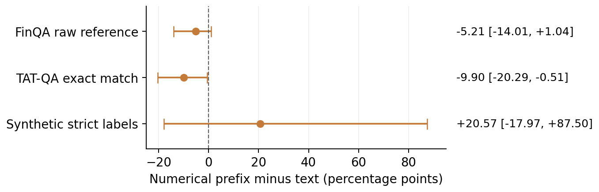
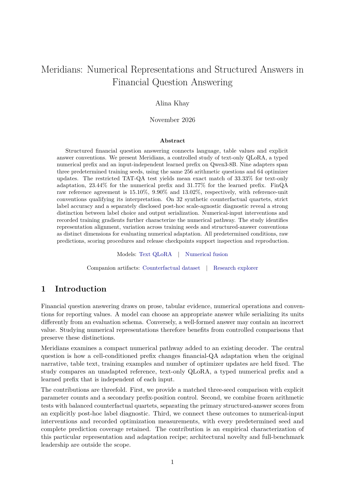
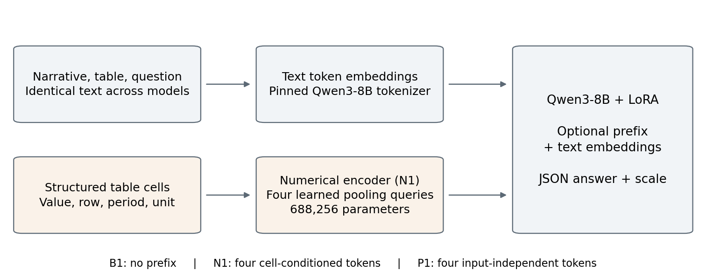

A view of the experiment
TAT-QA exact match
Mean across three seeds; one run for the base model.
0255075100%
Restricted arithmetic sample · Frozen primary scores
Financial question answering
Explore how text adaptation, numerical fusion and learned prefixes interact in a controlled three-seed study.
Qwen3-8B · Same selected training questions · All seeds retained
A view of the experiment
Mean across three seeds; one run for the base model.
Restricted arithmetic sample · Frozen primary scores
Predetermined, all reported
Base + nine adapted checkpoints
128 related counterfactual cases
Complete final prediction record
The controlled comparison
Adapts the text pathway using the narrative, serialized table and question.
Adds four prefix tokens conditioned on typed numerical table cells.
Adds four vectors independent of the input, providing a prefix-position control.
Explore the counterfactuals
Keep the question fixed. Flip the management claim, the numerical direction, or both. Inspect all four related cases and every model’s recorded answer.
This interface presents stored experimental outputs, without live model inference. The synthetic examples were held out from research-adapter training. Primary strict scores and the separate post-hoc diagnostic remain distinct throughout.
02 / Counterfactual explorer
Change the evidence or the claim. Compare what the models recorded.
| Metric | Prior period | Current period |
|---|
Margin = operating income ÷ revenue. Display percentages are rounded; reference labels use exact decimal values.
Management claim
Each scenario has two supported and two contradicted variants. Related cases share the same underlying scenario.
Recorded model responses
One correct label in complete answer/scale JSON, with the scale field empty. An incompatible scale remains incorrect.
Ignores only the scale string in otherwise complete, single-label JSON. Invalid responses remain wrong; primary scores are unchanged.
03 / All results
Every predetermined condition, with the primary and exploratory scores clearly separated.
Full condition-level record
| Model / seed | FinQA raw reference | TAT-QA EM | Strict CF labels | Post-hoc CF labels | Post-hoc quartets |
|---|
B0 is evaluated once and shared across seed comparisons. FinQA’s mixed reference-unit conventions qualify interpretation. Complete-quartet accuracy requires all four related labels to be correct.

04 / Paper & methods
Read the manuscript and inspect the artifacts that support the comparison.

A controlled study of numerical-prefix adaptation, training-seed variation, counterfactual consistency and structured-answer evaluation.
11 pages · 7 figures · 6 tablesInside the study

Companion artifacts
128 held-out synthetic cases, exact evidence, grouped scenario IDs and a deterministic generator.
MODEL ↗The predetermined seed 42 text adapter for the pinned Qwen3-8B backbone.
MODEL ↗The seed 42 adapter, numerical encoder and required four-token prefix inference path.
The comparison uses 256 selected arithmetic training questions and three predetermined seeds. Public benchmark pretraining exposure is unknown. The synthetic set covers 32 underlying scenarios and has not received independent human realism review. All results describe this backbone, adaptation recipe and restricted evaluation sample.
The explorer presents 1,280 recorded synthetic answers and aggregate financial-QA results; the complete study retains all 2,560 final prediction texts. The selected research code and complete final answer record are available on GitHub. An arXiv identifier will be added after it is assigned.